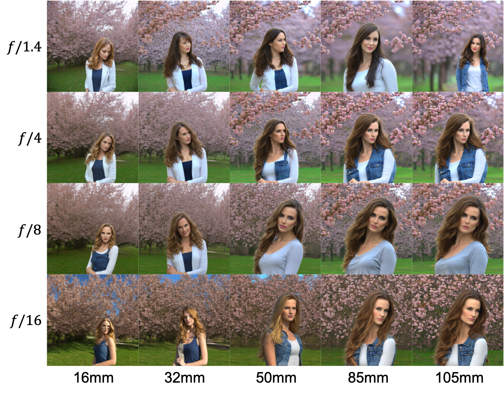

Image Editing

Using SDEdit, our method can edit the depth of field of an image by employing original camera settings as a negative prompt and target settings as a positive prompt, enabling detailed background enhancement.
TL;DR: Camera Settings 📷 + Text 📝 ⮕ Image 🖼️
Camera-settings-and-text to image generation. For the given camera settings and text prompt, our approach synthesizes the image based on these given conditions. The camera settings are embedded as tokens in the text feature space of Latent Diffusion Models (LDMs) for more effective and precise image control.
Text-to-image models have revolutionized content creation, enabling users to generate images from natural language prompts. While recent advancements in conditioning these models offer more control over the generated results, photography—a significant artistic domain—remains inadequately integrated into these systems. Our research identifies critical gaps in modeling camera settings and photographic terms within text-to-image synthesis. Vision-language models (VLMs) like CLIP and OpenCLIP, which typically drive the text conditions through cross-attention mechanisms of conditional diffusion models, struggle to represent numerical data like camera settings effectively in their textual space. To address these challenges, we present CameraSettings20k, a new dataset aggregated from RAISE, DDPD, and PPR10K.Our curated dataset offers normalized camera settings for over 20,000 raw-format images, providing equivalent values standardized to a full-frame sensor. Furthermore, we introduce Camera Settings as Tokens, an embedding approach leveraging the LoRA adapter of Latent Diffusion Models (LDMs) to numerically control image generation based on photographic principles like focal length, aperture, film speed, and exposure time. Our experimental results demonstrate the effectiveness of the proposed approach to generate promising synthesized images obeying the photographic principles given the specified numerical camera settings. Furthermore, our work not only bridges the gap between camera settings and user-friendly photographic control in image synthesis but also sets the stage for future explorations into more physics-aware generative models.
This image is generated with the text prompt "half body portrait of a beautiful Portuguese woman, pale skin, brown hair with blonde highlights, wearing jeans, nature and cherry blossom trees in background with 16mm lens, F/16 aperture, ISO 100, exposure time 0.01 second".
Text-to-image models have revolutionized content creation, enabling users to generate images from natural language prompts. While recent advancements in conditioning these models offer more control over the generated results, photography—a significant artistic domain—remains inadequately integrated into these systems. For example, the image above does not reflect the camera settings in the text prompt. With such a small aperture (F/16), the image should have a large depth of field, but the generated image has a shallow depth of field.
To address these challenges, we present CameraSettings20k and introduce Camera Settings as Tokens.
CameraSettings20k is a new dataset aggregated from RAISE, DDPD, and PPR10K datasets. Our curated dataset offers normalized camera settings for over 20,000 raw-format images, providing equivalent values standardized to a full-frame sensor.
We introduce Camera Settings as Tokens, an embedding approach leveraging the LoRA adapter of Latent Diffusion Models (LDMs) to numerically control image generation based on photographic principles like focal length, aperture, film speed, and exposure time.
Our key idea is to embed camera settings as tokens in the text feature space of Latent Diffusion Models (LDMs) for more effective and precise image control.
Using SDEdit, our method can edit the depth of field of an image by employing original camera settings as a negative prompt and target settings as a positive prompt, enabling detailed background enhancement.
Our method's U-Net LoRA for camera settings embedding can be fused with other models like ControlNet, enabling image synthesis based on specified camera settings while demonstrating compatibility and functionality.
@inproceedings{fang2024camera,
title={Camera Settings as Tokens: Modeling Photography on Latent Diffusion Models},
author={I-Sheng Fang and Yue-Hua Han and Jun-Cheng Chen},
booktitle={SIGGRAPH Asia 2024 Conference Papers},
year={2024}
}